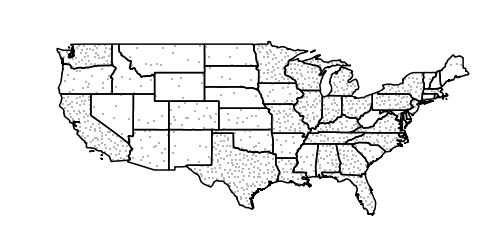

Fills with randomized symbols¶
It is possible to generate fills by randomly repeating a symbol in the polygons to be filled. Please refer to the equivalent SLD chapter for details on the meaning of the various options.
Simple random distribution¶
Here is an example distributing up to 50 small “slash” symbols in a 100x100 pixel tile (in case of conflicts the symbol will be skipped), enabling random symbol rotation), and setting the seed to “5” to get a distribution different than the default one:
* {
fill: symbol("shape://slash");
:fill {
size: 8;
stroke: blue;
stroke-width: 4;
stroke-linecap: round;
};
stroke: black;
fill-random: grid;
fill-random-seed: 5;
fill-random-rotation: free;
fill-random-symbol-count: 50;
fill-random-tile-size: 100;
}

Random distribution of a diagonal line¶
Thematic map using point density¶
Randomized distributions can also be used for thematic mapping, for example, here is the SLD for a version of topp:states that displays the number of inhabitantìs varying the density of a random point distribution:
* {
fill: symbol("circle");
stroke: black;
fill-random: grid;
fill-random-tile-size: 100;
:fill {
size: 2;
fill: darkgray;
};
/* @title low */
[PERSONS < 2000000] {
fill-random-symbol-count: 50;
};
/* @title mid */
[PERSONS >= 2000000] [PERSONS < 4000000] {
fill-random-symbol-count: 150;
};
/* @title high */
[PERSONS >= 4000000] {
fill-random-symbol-count: 500;
}
}

Thematic map via point density approach¶
Previous: Styling examples